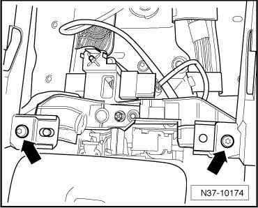
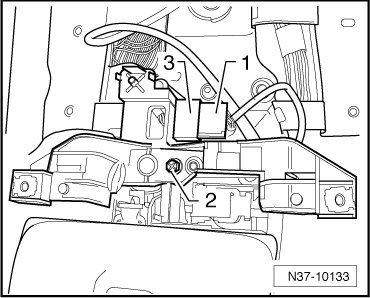
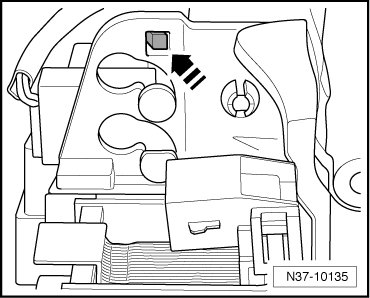
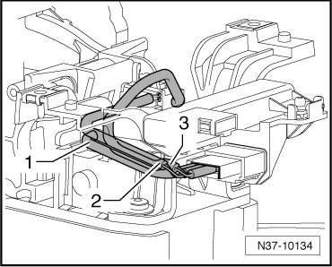

Selector Lever Park Position Lock Switch
Selector Lever Park Position Lock Switch
The Tiptronic switch (F189) is integrated into the wiring harness for both solenoids.
Special tools, testers and auxiliary items required
• Torque wrench (VAG 1783)
Removing
- Remove selector lever handle. Refer to --> [ Selector Lever Handle ] Selector Lever Handle.
- The procedure for disconnecting the battery must absolutely be obeyed.
- Disconnect battery ground (GND) cable with ignition switched off.
- Remove cover from the center console..
- Remove bolts - arrows - from center console.

- Release connector - 1 - and disconnect.

- Remove bolt - 2 - and remove retainer.
- Pull connector - 3 - out from the retainer.
- Separate the connectors from the solenoids.
- Press the securing lever toward the right and pull the switch upward out of the shift mechanism.

Installing
Installation is performed in the reverse order of removal. Pay attention to the following:
- Route the wiring harnesses - 1 - to - 3 - as shown in the illustration.

1 Wiring harness to the shift lock solenoid (N110)
2 Wiring harness to the selector lever park position solenoid (N380)
3 Wiring harness to selector lever park position lock switch (F319)
- Press connector - 3 - into the retainer.
- Fasten bolt - 2 -.
- Connect connector - 1 -.
- Install cover to the center console..
- Connect battery..
- Install selector lever handle. Refer to --> [ Selector Lever Handle ] Selector Lever Handle.